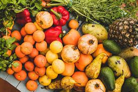
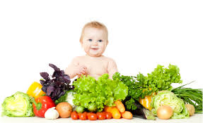

Conhecendo os aimentos: d natural aos industrializados
Os alimentos naturais vêm da natureza e passam por pouca modificação antes do consumo. Eles podem ser de origem vegetal ou animal e são importantes para a saúde porque possuem vitaminas e nutrientes. As frutas são exemplos de alimentos naturais e ajudam no crescimento e na proteção do organismo. Cinco exemplos de frutas são: maçã, banana, laranja, manga e uva.

